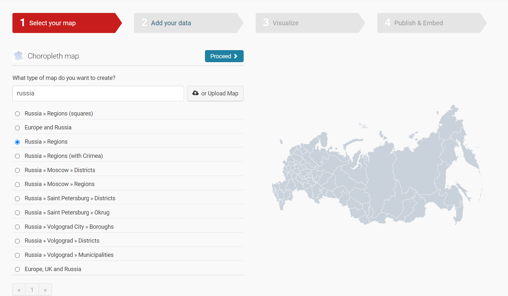
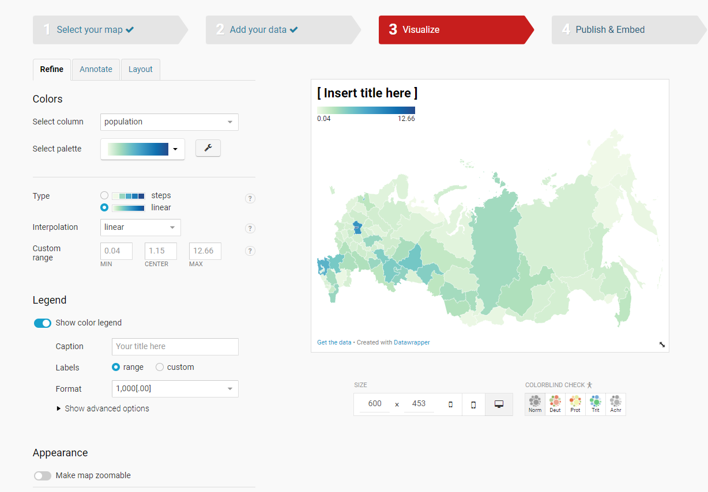

11 Создание карт с помощью сервиса Datawrapper
Не всегда для подготовки и публикации карт может быть использовано специализированное ПО. С развитием сферы инфографики и визуализации данных некоторые сервисы предлагают возможность создания и подготовки карт прямо в браузере.
В ходе этого занятия мы воспользуемся сервисом Datawrapper https://www.datawrapper.de/, который позволяет создавать графики, таблицы и карты без регистрации в окне браузера.
Почитать про создание карт и особенности можно в блоге сервиса https://blog.datawrapper.de/category/maps/ или в общей информации о картах https://www.datawrapper.de/maps
В качестве исходных данных, как и в предыдущий раз, воспользуемся данными о площади и населении субъектов РФ. Эти данные были сформированы в таблицу, находящуюся по ссылке https://docs.google.com/spreadsheets/d/1sJ8Ea7n82EVIj2UVb_Uj6XYN9FwMfso60E4n-erqKic/edit?usp=sharing
11.1 Картограмма (choropleth)
Для начала работы на странице https://www.datawrapper.de/maps нужно нажать кнопку Build your own map, которая переведет вас на страницу создания новой карты https://app.datawrapper.de/select/map.
В качестве первой карты создадим картограмму (choropleth). Выбираем соответствующий тип и переходим на страницу выбора территории нашей карты.

С помощью поиска нам нужно найти вариант Russia » Regions

Далее нам необходимо добавить данные для визуализации на карте. Так как в нашем случае исходные данные расположены в Google таблице, то мы можем подсоединиться к ней напрямую по ссылке Connect Google Sheet.

В результате справа появится таблица с нашими данными и на карте автоматически начнут раскрашиваться регионы.

Но здесь нужно совершить важный шаг: сопоставить шаблон карты с нашей таблицей. Их нужно объединить по общему полю с названиями регионов. Для этого нужно перейти во вкладку Match и выбрать общие колонки. Также на этом этапе нужно выбрать Values, то есть колонку со значениями, которые будут отображаться на карте (здесь выберем population - количество населения в регионе).

Далее мы можем заняться более подробной настройкой нашей карты

На этом этапе вы можете поменять цветовую шкалу, добавить источник данных, автора, описание, заголовок карты, заголовок легенды, возможности загрузки и прочие дополнительные элементы.
Полученную карту можно посмотреть по ссылке https://datawrapper.dwcdn.net/eP32U/2/
Но как вы возможно помните из предыдущих занятий на подобных картах не желательно отображать абсолютные значения. Поэтому отредактируем карту таким образом, чтобы она показывала плотность населения (чел/км кв).
Здесь вы можете продолжить работать с этой же картой, либо создать новую и добавить данные таким же образом, как и для предыдущей. Я просто продублировала карту, чтобы отредактировать ее копию.
В первую очередь нужно добавить новую колонку со значениями плотности населения. Рассчитываемую колонку мы можем добавить прямо в сервисе.

Также здесь нужно не забыть заменить колонку Values.
Далее мы можем настроить нашу карту по желанию.
Полученная карта населения по плотности доступна по ссылке https://datawrapper.dwcdn.net/8VkjX/2/
11.2 Плиточная карта
Плиточную карту вы можете создать заново, а можете продулиблировать свою картограмму и просто отредактировать.
Плиточные карты в Datawrapper создаются аналогично картограммам, только в качестве типа карты выбирается Russia » Regions (squares).

В этом шаблоне карты русские названия регионов написаны немного не так. как в нашей таблице, поэтому автомитически привязки не случится у целого ряда субъектов.
Для исправления этого несоответствия есть два варианта:
исправить названия в исходном датасете, чтобы они совпадали с названиями в шаблоне, и перезагрузить данные;
отсоединить Google таблицу и найти соответствия в таблице вручную.
Остальной процесс создания и редактирования аналогичен 11.1.
Полученную плиточную карту населения России можно посмотреть по ссылке https://datawrapper.dwcdn.net/5n5b9/1/